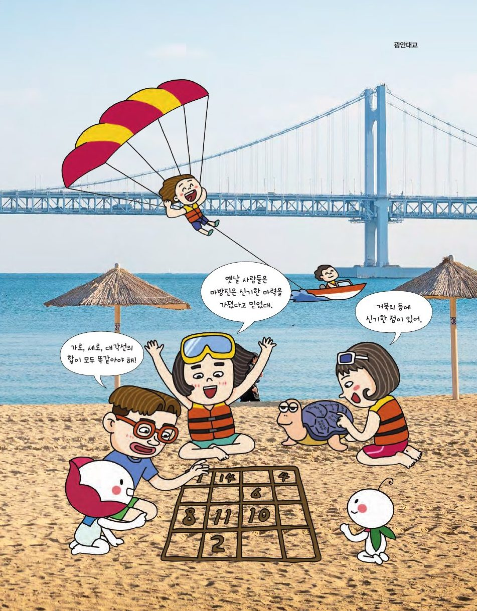

뒤러의 판화 「멜랑콜리아Ⅰ」에는 가로·세로·대각선의 합이 모두 34인 4차 마방진이 새겨져 있어요. 옛사람들이 마력을 지녔다고 믿은 수의 배열을 만들어 보세요.
★ 이 단원에서는 — 라틴방진과 직교 라틴방진의 뜻을 알고, 직교 라틴방진과 마방진의 관계를 이해한다.

📍 광안대교1부터 9까지 수를 한 번씩 넣어 가로·세로·대각선의 합이 모두 15가 되게 만들어 보세요. 칸을 누른 뒤 숫자를 고르세요. (낙서(洛書)의 거북 등 무늬가 그 시작이래요)
가운데를 지나는 줄은 가로·세로·대각선 2개로 4줄. 4줄의 합 60에서 나머지 8칸(합 45−가운데)을 빼면 가운데가 세 번 더 세어진 것 → 60 − (45 − x) = 3x + x … 정리하면 x = 5.
n차 라틴방진: n×n 칸에 n개의 서로 다른 숫자를 넣어 가로줄, 세로줄에 중복 없이 배열한 것. 대각선 조건을 켜면 두 대각선에도 중복이 없어야 해요.
가운데 칸은 두 대각선과 가로·세로 모두에 들어가요. 3차에서는 가운데 수가 어느 줄에서든 다른 두 수와 달라야 하는데, 모든 줄이 1·2·3을 다 써야 하니 모순이 생겨요 → 불가능. 4차는 가능해요!
라틴방진 두 개를 겹쳐 순서쌍을 만들었을 때 중복되는 순서쌍이 없으면 직교 라틴방진이에요. 순서쌍 (a, b)를 자연수로 바꾸면 마방진이 나와요!
3차: 3×(a−1)+b. 4차: 4×(a−1)+b. 두 라틴방진이 직교이고 대각선 합도 n(n²+1)/2가 되면 마방진이 돼요.
오일러(1776)보다 60년 이상 앞서, 조선의 최석정(1646~1715)은 『구수략』에 9차 직교 라틴방진('구구모수변궁양도')을 남겼어요. 2006년 『Handbook of Combinatorial Designs』에 실리며 세계 최초로 인정받았습니다.